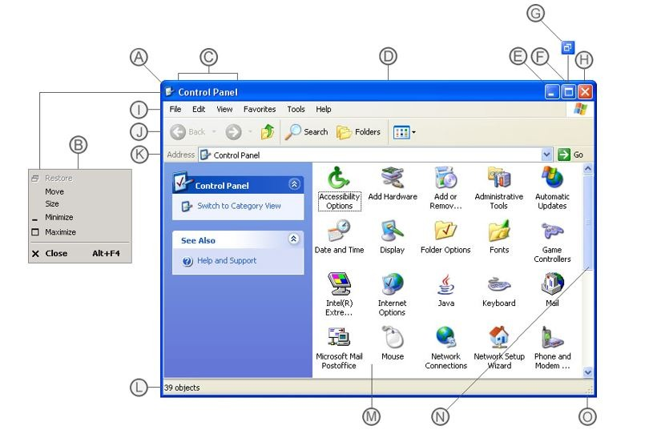
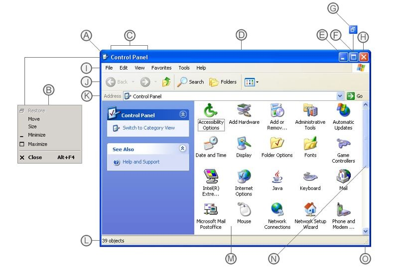

For my Windows XP class project, I designed high-resolution comps in Figma, reimagining the interface with a modern aesthetic while preserving its nostalgic charm. All graphics were created from scratch, meeting originality requirements. Components include a taskbar, start menu, system tray, desktop icons, window frames, and buttons, enhanced with updated gradients, shadows, and textures.
To really immerse my audience to feel like their in an actual windows xp desktop is by adding a BSOD and refine my UI Components
 

I started to mark out which UI components I should make for my reiteration.